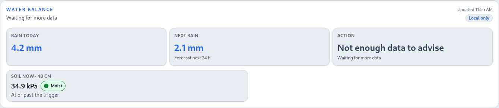
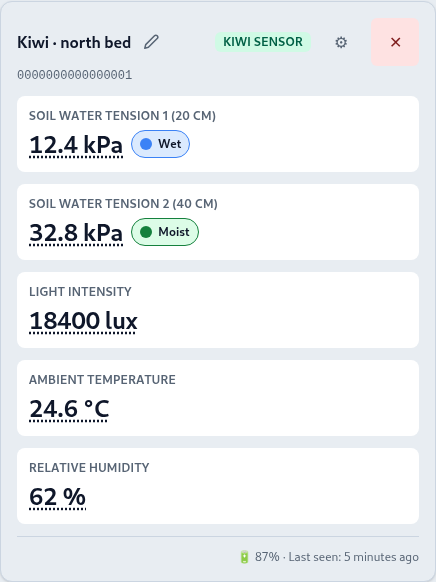
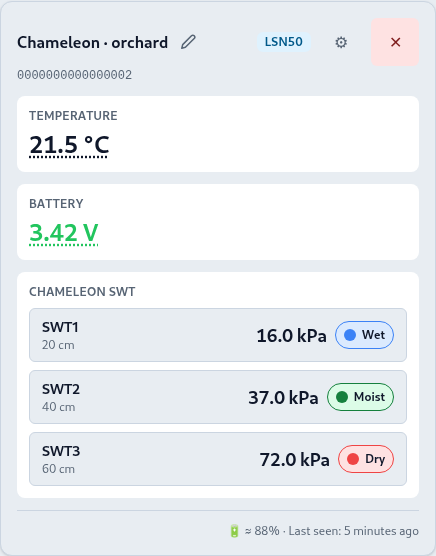
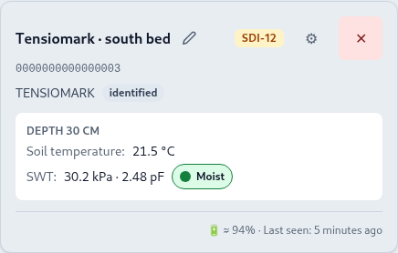
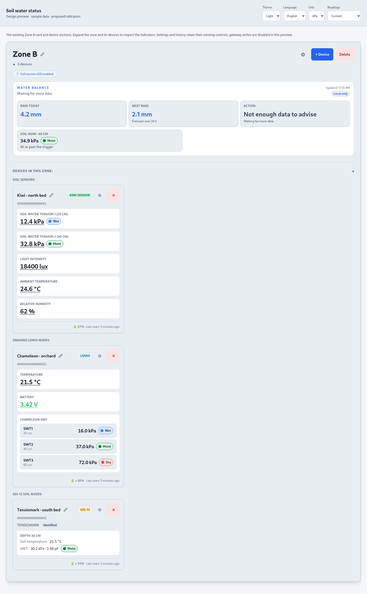
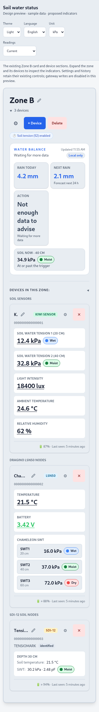

Soil water status
Browser captures of the existing OSI cards with the proposed status pills. Numeric readings keep their neutral color. The dot and translated label share the same meaning in both themes.
Water card

“Moist” describes the soil band; “At or past the trigger” describes this zone’s separate 30 kPa setting.
Device cards

KIWI: one indicator per soil channel, beside the history button.

LSN50: each depth retains its own status. The row is still one history button.

SDI-12: kPa and pF stay together; the pill follows the measurement.
See the full desktop and mobile layouts

Desktop, 1440 px.
Mobile, 390 px.Sample data only. These screenshots validate the proposed layout; production implementation is still pending. At 320 px, existing device-header controls can hide names. That inherited issue is recorded in the review notes.